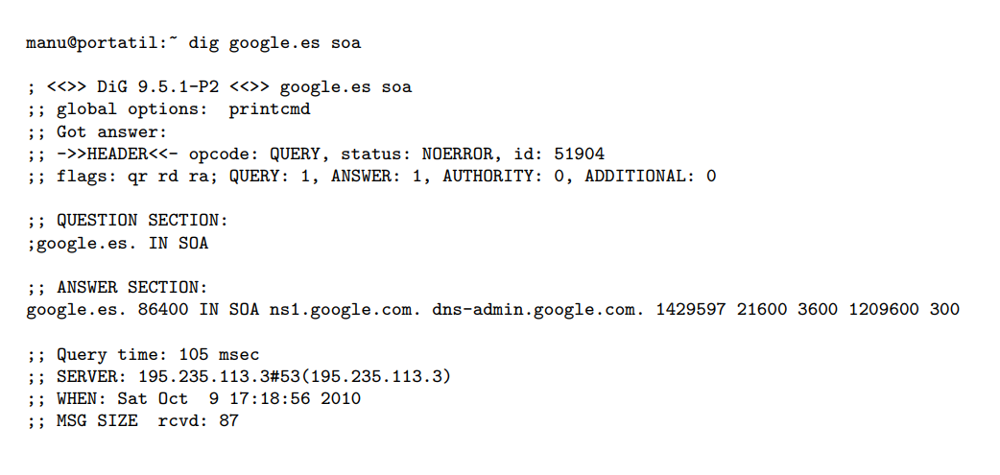

DNS
DNS son las iniciales de Domain Name System (sistema de nombres de dominio) y es una tecnología basada en una base de datos que sirve para resolver nombres en las redes, es decir, para conocer la dirección IP de la máquina donde está alojado el dominio al que queremos acceder.
Cuando un ordenador está conectado a una red (ya sea Internet o una red casera) tiene asignada una dirección IP. Si estamos en una red con pocos ordenadores, es fácil tener memorizadas las direcciones IP de cada uno de los ordenadores y así acceder a ellos pero ¿qué ocurre si hay miles de millones de dispositivos y cada uno tiene una IP diferente? Pues que se haría imposible, por eso existen los dominios y las DNS para traducirlos. Por lo tanto, el DNS es un sistema que sirve para traducir los nombres en la red, y está compuesto por tres partes con funciones bien diferenciadas.
Principales características
- Función : Direcciones IP > Nombre máquina
- Es más fácil de recordar un nombre que una dirección IP
- Se usa tecnología Cliente/Servidor
- Base de datos distribuida
- Antiguamente exístia un archivo "hosts.txt" en cada máquina con esos datos
- En 1983 se redactan los RFCs 882 y 883 que especifícan el servicio DNS
Dominios y Zonas
- com Organizaciones comerciales [yahoo.com]
- edu Organizaciones educativas [mit.edu]
- net Organizaciones dedicadas a Internet [php.net]
- org Organizaciones no comerciales [linux.org]
- gov Organizaciones gubernamnetales [nasa.gov]
- org Organizaciones geográficas
- es España
- fr Francia
- it Italia
ICANN organismo encargado de la gestión de los dominios raíz y TLD
Dominios de primer nivel TLD
- Zona Es un archivo que tiene información de parte del espacio de nombres de dominio.
- Dominio Es un subárbol dentro del árbol del espacio de nombres de dominio
- Autoridad sobre la zona
Servidor de nombre que tiene información sobre la zona
- Un servidor DNS puede tener autoridad sobre varias zonas
- Delegar Descentralizar la administración BD de DNS, dividiéndola en subdominios y cediendo el control del subdominio a otra autoridad.
Tipos de Servidores DNS
- Primario o Maestro
- Secundario o Esclavo
- Caché
Obtiene la información de sus zonas de sus archivos locales
Obtiene información de su zona o zonas de otro servidor de nombres (generalmente ser un servidor primario) que tiene autoridad sobre esa zona o zonas. Interesante para evitar cadas del sistema. La información del servidor primario lo obtiene mediante una transferencia de zona
Solo atiende a consultas de clientes DNS. Acelera las consultas
Base de Datos del protocolo DNS
- NOMBRE <---> DIRECCIÓN IP
- NOMBRE --> IP
- NOMBRE <-- IP
Cada Servidor DNS mantiene dos bases de datos que sirve para asociar nombre e IPs
Archivos de zona asocian nombres con IPs
BD de resolución inversa asocia IPS con nombres
Solo atiende a consultas de clientes DNS. Acelera las consultas
Información de Zona
- Propietario nombre del hostso dominio DNS
- El símbolo @ representa el nombre de la zona
- Una cadena vacía representa al propietario del RR anterior
- TTL Tiempo de vida o número de segundos que está en caché
- Clase Te Generalmente IN de Internet, representa una red TCP/IP
- Tipo de registro
- SOA
- NS
- A
- PTR
- MX
- CNAME
- TXT
- SRV
- RDATA Información específica de un registro
Contiene los registro de recursos RR que describen la información relativa al dominio DNS
El formato de cada RR es:
Propietario TTL Clase Tipo RDATA
Donde la descripción de cada uno de los campos es:
Registro de recursos RR
- SOA (Start of Authority) Inicio de autoridad
- NS (Name Server) Establece los servidores DNS para cada zona
- A (Address) Establece una correspondencia entre un FDQN y una dirección IP
- PTR PoinTeR Hace lo contrario que el registro A
- CNAME Canonical Name Crea un alias para el nombre del dominio especificado
- MX Mail eXcahange Indica una o varias máquinas encargadas de entregar el correo al dominio
DIG
- Dig @servidor dns nombre opciones tipo
- @servidor dns: nombre o IP del servidor DNS a quien preguntamos
- Nombre de dominio cuya IP queremos resolver
- Tipo de consulta. Valores posibles
- A IP del servidor que aloja al dominio (por defecto)
- NS servidores DNS
- MX servidores de correo
- ANY todas las anteriores
- AAAA IP en IPv6 (si tiene)
El comando dig (Domain Information Groper) permite realizar consultas a los servidores DNS
Obtención de todos los registros
Obtención de todos los registros
Obtención de una IPv6
Obtención del servidor DNS maestro
Resolución inversa
Consulta a otro servidor DNS
Métodos de búsqueda
- Resolución de nombres mecanismo por el que se traducen los nombres de máquinas a direcciones IP
- Tipos de búsqueda
- Búsqueda recursiva Se realiza una petición de resolución de nombres al servidor DNS local, y si el servidor no dispone de la información solicitada va a buscarla al servidor de nombres con autoridad que lo contiene
- Búsqueda iterativa el servidor DNS local devuelve la mejor repuesta que puede ofrecer al en cliente en función del contenido en su caché, pero si el servidor no dispone de esa información solicitada indica la IP del siguiente servidor de nombres autorizado, comenzando por un servidor raíz